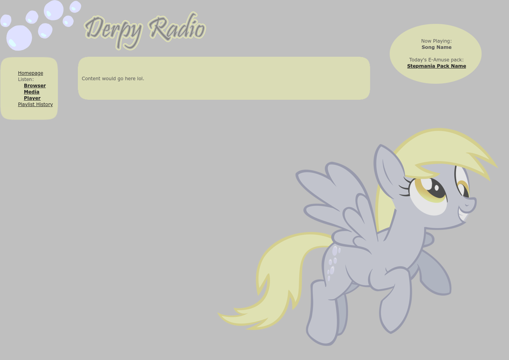
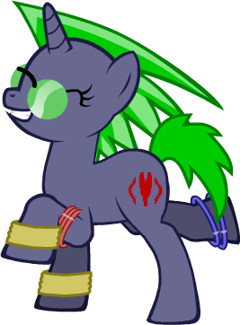

Derpy Radio
Back in the day when My Little Pony: Friendship is Magic was coming out, I was obsessed with theming programming projects around it. One of these projects was a website that never got off the ground called Derpy Radio, an internet radio station that would play nothing but "brony" music. (Or I guess since it never publicly launched, it only ever existed as an intranet radio station instead.)
While it never launched, it was a fun project to work on and it was cool to have a little fake intranet radio station running on my computer at all times. I got creative with it and added some features where certain genres would be picked on certain days and at certain times.

This basic algorithm for picking songs was anthropomorphized... or I guess pony-morphized, into a My Little Pony original character I named Public Void Mare. She's the only fan character I've ever made for the series, and she was supposed to be the DJ of the website. Despite her wild DJ appearance, she actually liked more jazzy and chill music.

If you were listening to Derpy Radio on the site, she'd pop up on the site whenever one of her (read: my) favorite songs started playing. She could also show up on other special occasions like if a special broadcast was running, or if I felt like giving her something special to say at the moment. And she had a little cartoon speech bubble for her dialogue... not unlike my current site's mascots now that I think about it.
While throwing together the intial Random Stuff section of this site, I thought it'd be fun to throw a bunch of "random xD" images onto the site, and I decided to give tribute to this otherwise unreleased My Little Pony fan character I made years ago, giving her one final thing to say. And then crunching up the JPEG.

So yeah, I guess she's canonically gay now. Awesome! Anyways, over a decade after creating her let's just lean into the cringe and make her a whole character sheet.
- Name: Public Void Mare
- Species: Unicorn
- Gender: Female
- Age: Adult (how old is a normal age for MLP characters lol?)
- Residence: Canterlot
- Job: Internet DJ, Programmer
- Sexuality: Lesbian
- Cutie Mark: A heart between two angle brackets
- Personality: Chill and relaxed
- Loves: Finding new music and sharing music with others, computer programming, XSLT
- Hates: When others judge a whole genre of music at once, segmentation faults, XSLT
... why did I do this lol.